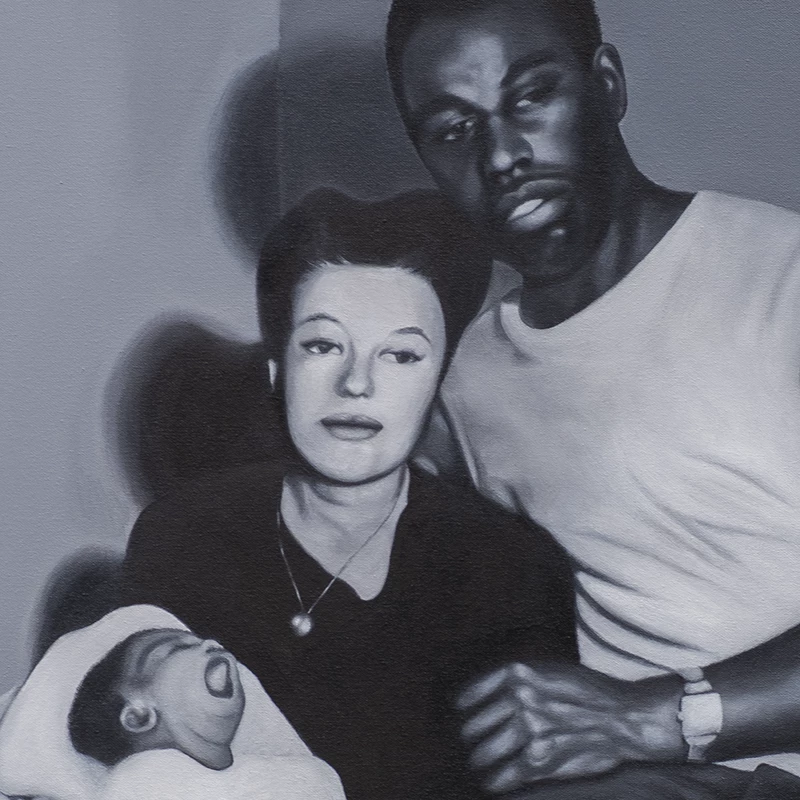
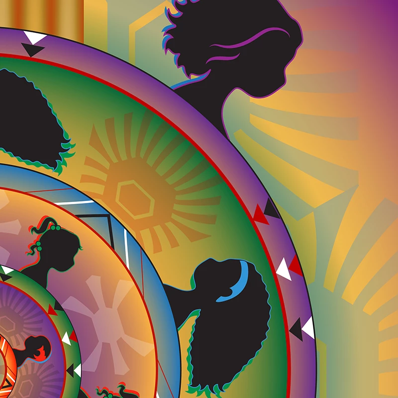

Ancestors Know Who We Are ignites a conversation on
the experiences of Black-Indigenous women through art.
Joelle Joyner's and Paige Pettibon's paintings honor
ancestors who continue to inspire and guide. Moira
Pernambuco's photographs are a counter-narrative to
negative portrayals of Black boys and men. Monica
Rickert-Bolter's digital artwork is a reflection on the
relationship between hair and cultural identity. Storme
Webber's prints and spoken-word performance pay tribute
to her multiracial family and childhood. Basketry by Rodslen
Brown (1960–2020), a Freedman descendant and citizen of the
Cherokee Nation, embraces her activism and both her
heritages.
Ancestors Know Who We Are continues a conversation
launched more than a decade ago in the groundbreaking book
and traveling exhibition
IndiVisible: African-Native American Lives in the
Americas.
Through artistic expression and reflection,
Ancestors Know Who We Are explores contemporary
realities in the interwoven histories of Black and
Indigenous peoples.


 Rodslen Brown
Rodslen Brown
 Storme Webber
Storme Webber
 Joelle Joyner
Joelle Joyner
 Monica Rickert-Bolter
Monica Rickert-Bolter
 Joelle Joyner
Joelle Joyner
 Storme Webber
Storme Webber
 Paige Pettibon
Paige Pettibon


{kind=link}
![Paige Pettibon Long descrition of the image: A hyper-realistic painting of a black-and-white photo of a Native American mother and an African American father sitting with their baby. The parents' gaze is directed to the right. The mother, who wears a small pendant necklace, a dark dress and shoes, and thick white socks, sits in a chair with the yawning baby wrapped in a white blanket on her lap. The father wears a white t-shirt, dark trousers and shoes, and a watch on his right wrist. He is sitting on the arm of the chair with his left arm around his wife and his right resting across his lap. The chair sits on a hardwood floor in the corner of a room. The right wall behind the chair is bare; on the left wall hangs three small paintings. The top painting is of Mary holding baby Jesus and the two bottom paintings are of a silhouetted figure kneeling in prayer.](./images/pettibon-rhoda-richard-baby-richard-2x.webp){kind=link}
{kind=link}
![Monica Rickert-Bolter Long descrition of the image: A pair of softly blurred rings, the outer bright purple and the inner yellow, surround four colorful concentric circles. Inside the yellow ring are pale-green abstract turtle shell designs. Each circle is surrounded by a ring of contrasting color. Extending from the top and bottom of the outermost ring are seven yellow flute-like pipes shaded in orange. The concentric circles shrink in size as they move toward the center. Inside each circle are different abstract turtle shell designs, and inside each ring are a series of red, black, and white triangles. Evenly spaced atop the rings are the silhouettes of five female heads with hairstyles at different stages of life. The first circle is green and yellow surrounded by a purple ring; the silhouettes have straight, flowing neck-length hair. The second circle is purple and yellow surrounded by a blue ring; the silhouettes have long, curly shoulder-length hair. The third circle is purple and yellow surrounded by a green ring; the silhouettes have a tight ponytail at the top of the head and a smaller ponytail at the base of the neck. The smallest circle at the very center is blue surrounded by a bright orange ring; the silhouettes have little to no hair.](./images/bolter-hair-stories-2x.webp){kind=link}
{kind=link}